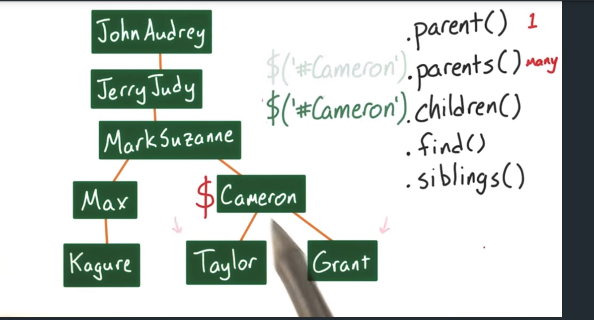

DOM Traversal methods
"ESSENTIALLY THERE ARE 5 DIFFERENT METHODS THAT CAN BE CALLED ON A TARGETTED QUERY TO MOVE UP OR DOWN, LEFT OR RIGHT, AND ACROSS MANY OR JUST ONE NODE AT A TIME, ALSO A SINGLE ITEM CAN BE RETURNED:"
- "$('#TARGETID').PARENT() --> RETURNS THE NODE AND ITS CHILDREN ONE NODE ABOVE THE CURRENT '#TARGETID' NODE"
- 2)"$('#TARGETID').PARENTS() RETURNS THE NODE AND ITS CHILDREN ONE NODE ABOVE THE CURRENT '#TARGETID' NODE
- 2)"$('#TARGETID').children()
- 2)"$('#TARGETID').find()
- 2) "$('#TARGETID').siblings()
JQuery is just a Javascript library that can be called using the "$" character. It is considered an object, specifically a function, that takes in two args and returns a result.
JQuery is used on 60% of the top 100,000 websites and is super useful for writing simple code for manipulation of the Data Object Model "DOM" and its respective elements.
The following is a list of the jQuery script sources that you need to include in the HTML of your site in order to use jQuery

- ""
- ""
- ""
Last notes on JQuery
'Interestingly enough the Jquery scripts can only be used on tags and elements that come before them in the DOM, so its taking a snapshot of what has loaded and working with it up to that point.'
'In order to track a particular even with JS and event listeners an example is shown below'